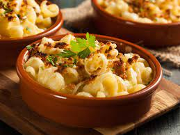

Mac N Cheese Recipe

Description
This is a completely unpretentious, down-home macaroni
and cheese recipe just like my grandma and mom always made.
A simple white sauce where you add cheese and a few other
flavors with macaroni and a potato chip crust. This recipe makes a lot,
I like to make two pans so I can take one to a pot luck and have the
other one to keep in the fridge for later.
It's an easy recipe to adjust down if you only want to make one pan.
If you aren't cooking it right away, just keep the topping separate
until you are ready to put it in the oven.
Ingredients
- 1 ¾ pounds whole-wheat macaroni
- ¾ cup butter
- 1 onion, diced
- salt to taste
- 4 cloves garlic, minced
- 1 ½ cups very dry white bread crumbs
- 1 ½ cups milk
- 2 pounds ground chuck
- ½ cup chopped fresh flat-leaf parsley
- 2 ounces grated Parmesan cheese
- 2 large eggs, beaten
- 2 teaspoons salt
- 1 teaspoon freshly ground black pepper
- 1 pinch cayenne pepper, or to taste
- 3 cups tomato sauce, or to taste
Steps
- Preheat oven to 325 degrees F (165 degrees C). Grease a 9x13-inch baking dish.
- Heat olive oil and butter together in a large skillet over medium-high heat.
Saute onion with a pinch of salt in hot oil and butter until onion is golden
brown and soft, 5 to 10 minutes. Add garlic and saute until fragrant, about
30 seconds. Remove skillet from heat and cool onion mixture to room temperature.
- Place bread crumbs in a large bowl. Add milk and stir with a fork until combined.
Let sit until all of the milk is absorbed into the breadcrumbs, 15 to 20 minutes.
- Combine ground chuck, cooled onion mixture, parsley, Parmesan cheese, eggs, 2 teaspoons
salt, black pepper, and cayenne pepper in a bowl. Grab a handful of breadcrumbs and squeeze
very gently to remove excess milk. Repeat with remaining breadcrumbs, transfer breadcrumbs
to ground chuck mixture, and discard excess milk. Stir ground chuck mixture until evenly combined.
- Turn chuck mixture out into prepared baking dish, and shape meat into a 3x4x10-inch meatloaf.
Pour tomato sauce over the loaf and into the bottom of the dish.
- Bake in the preheated oven until no longer pink in the center, about 1 hour 10 minutes.
An instant-read thermometer inserted into the center should read at least 160 degrees F (70 degrees C).
Let meatloaf rest for at least 10 minutes before slicing.